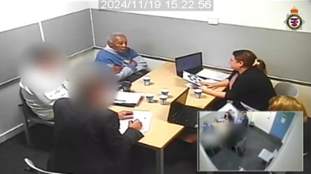
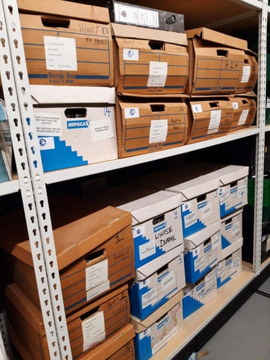
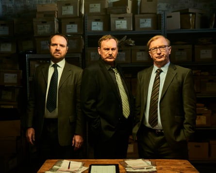
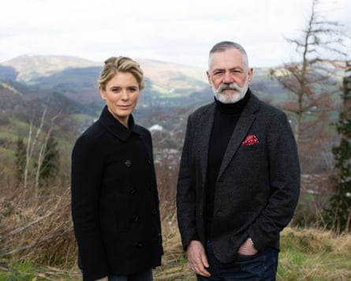

F ewer cold cases such as the 1967 murder of the Bristol woman Louisa Dunne are likely to be solved because of police budget cuts, “haphazard” investigations and loss of scientific knowhow, experts have warned.
While praising Avon and Somerset police for catching 92-year-old Ryland Headley 58 years after he raped and murdered Dunne , specialists in scientific evidence, law and criminology expressed concern at challenges ranging from the storage of evidence to the skill of DNA analysts and the modest size of cold case teams.
Prof Angela Gallop, a forensic scientist nicknamed the Queen of crime-solving , said: “It’s great when they solve these crimes, it always means something to the families of the victims.
“But police budgets are so tight, they have enough problems funding current investigations, never mind these old ones. There are lots of cases waiting to be unlocked.”
A screen grab from Avon and Somerset police of Ryland Headley being interviewed after his arrest for the murder of Louisa DunnePhotograph: Avon and Somerset Police/PA
Days before the Headley trial began, a commission on forensic science chaired by Gallop concluded that the sector in England and Wales was in a “graveyard spiral” leading to an increase in unsolved crimes.
The commission said the two countries had lost their national forensic science service and the commercial market that followed had “collapsed”.
Police forces were taking more testing in-house or moving away from “traditional” forensic science, because they perceived commercial provision to be too slow and too expensive, the commission concluded.
Gallop said: “At the moment, forensic science isn’t working for anyone. There aren’t the scientists to help the police – a lot of them have been deskilled or become disenchanted because it’s all about quick cheap tests, not scientific investigation.
“There aren’t enough of us with the right experience. We’re in a sorry state.”
Angela Gallop, photographed for the Guardian in 2022.Photograph: David Levene/The Guardian
Carole McCartney , professor of law and criminal justice at the University of Leicester, said cold case investigations could be “haphazard”. She said: “There are 43 police forces [in England and Wales], 43 different ways of doing things and they’re all on a budget.”
A big concern is that the forces do not have the budget or expertise to run complex storage facilities. McCartney said: “I’ve spoken to forensic scientists who say they won’t touch a case if the evidence has come out of a police store because they can’t attest to its integrity.”
She said, ironically, it may be easier to solve very old crimes than new ones because some evidence from historical cases is still stored centrally.
Avon and Somerset police has been feted for the cold case inquiry, codename Operation Beatle, that led to Headley being jailed for life , but some of the serious challenges faced by the police emerged, not least the small size of the cold case team that caught Headley.
Exhibit boxes from Avon and Somerset police’s investigation of Louisa Dunne’s murder.Photograph: Avon and Somerset Police/PA
There were only six part-timers – two officers and four retired detectives now working as civilian investigators. They have about 30 unsolved murders on their books, and also look at rapes, missing people and unidentified bodies.
McCartney said when she visited a different force she was told they had an “amazing” system. “It turned out to be four retired cops in a bunker sifting through boxes and Googling the cases.”
Glyn Maddocks KC, a solicitor based in south Wales, said: “Forces [in England and Wales] store material differently: they’re all deciding slightly differently what to test and what not to test, what to take swabs off and what not to. It’s quite chaotic.”
Maddocks said forces carrying out their own scientific investigations could lead to miscarriages of justice. “People have this idea that forensic science is independent.”
The BBC cold case detective series Steeltown Murders.Photograph: Tom Jackson/BBC
The Headley case has made headlines around the world, a reminder of the fascination cold cases hold. Ed Talfan, the creative director of the Welsh production company Severn Screen , which has made two celebrated cold case shows based on real-life crime, Steeltown Murders and The Pembrokeshire Murders , said such investigations made powerful drama.
Talfan said: “Cold cases hold a particular power, because victims’ families not only have to endure the pain and shock that comes with losing a loved one, but then navigate the terrible limbo that follows.
“When a breakthrough does finally come, sometimes after decades, I think audiences respond to the families’ feeling of release – not from the pain of losing their loved one, but from the pain of not knowing. I don’t think families ever get closure. But knowing the facts, knowing who was responsible, gives them something that matters deeply.”
Emilia Fox and Prof David Wilson in Channel 4’s cold case series In the Footseps of Killers.Photograph: Alaska TV
Prof David Wilson, emeritus professor of criminology and presenter of the Channel 4 cold case series In the Footsteps of Killers , said: “We really like an ending. We’ve always been attracted to solving the mystery.”
But he said there were no happy endings. “We might get a denouement in terms of what happened, but that doesn’t necessarily bring family and friends any form of closure. The ripples continue.”
Women’s campaign groups are keen that Dunne, who was killed aged 75, is not forgotten and have called for the investigations into Headley to continue. The campaign group Women Against Rape said: “We’re glad the appalling crimes against Louisa Dunne are finally recognised.
“But how many other women has this man raped and murdered? Solving cold cases doesn’t atone for continuing refusal by the authorities to treat violence against women and girls as a serious crime.”